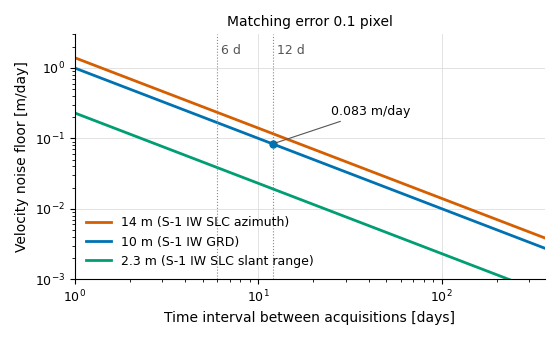

| SAR Concepts: Offset Tracking | |
Offset tracking measures how far the surface moved between two acquisitions by cross-correlating small amplitude patches of a coregistered image pair. It gives a two-dimensional displacement (range and azimuth) of metres to hundreds of metres, needs no phase unwrapping and works where InSAR fails: fast glaciers, large landslides, earthquake ruptures. The price is precision: a fraction of a pixel instead of a fraction of a wavelength.
Around each point of a regular grid a window of the Reference amplitude image is compared with the Secondary. The shift (Δx, Δy) in pixels that maximises the normalised cross-correlation is converted to metres with the pixel spacings δr (range) and δa (azimuth), and divided by the time interval Δt:
v = √[(Δx · δr)² + (Δy · δa)²] / Δt
The two components are in range (slant range, i.e. the line of sight, on SLC; its projection on the ground on GRD) and in azimuth. InSAR measures only the line-of-sight component, but with millimetre precision; it wraps every λ/2 and fails when the motion between dates changes the speckle pattern. Offset tracking is therefore its complement: Strozzi et al. (2002) found the interferometric accuracy two orders of magnitude better, and offsets usable where interferometry was limited by phase noise. Combining azimuth offsets with InSAR in range is a common way to get two components from one pair.
Matching precision is typically 1/10 to 1/20 pixel. Strozzi et al. (2002) report offset errors of the order of 1/20 pixel on ERS data; Michel et al. (1999) mapped the Landers earthquake from ERS amplitude images with 1σ errors of 0.8 m in range and 0.4 m in azimuth. Three choices set the result:
A matching error σpx (pixels) gives a velocity noise floor
σv = σpx · δ / Δt
which falls as the interval grows (Figure 1). A long interval therefore measures slow motion better, but the surface changes more (snow, melt, crevasses, vegetation) and the correlation drops: Strozzi et al. (2002) got confident results for only 307 of more than 6000 patches over a 35-day interval. The fastest measurable velocity is set by the search range divided by Δt. Choose the shortest interval in which the expected motion is several times the noise floor.

Figure 1. Velocity noise floor σv = 0.1 pixel × spacing / Δt for Sentinel-1 IW: 14 m (SLC azimuth), 10 m (GRD) and 2.3 m (SLC slant range). Over 12 days with 10 m pixels it is 0.083 m/day; motion must be well above the line to be measured.
Offset Tracking (Offset-Tracking, Radar > SAR Applications > Ice) needs a
coregistered stack; otherwise it stops with "Source product should be a coregistered stack created by
DEM-Assisted Coregistration". Use DEM Assisted Coregistration: its offsets come from orbits and the DEM only, so
the surface motion stays in the stack, whereas a Cross-Correlation and Warp stack fits part of the motion away
(see Coregistration). For Sentinel-1 IW SLC (refused by DEM Assisted
Coregistration) use TOPSAR-Split, Back-Geocoding and TOPS Deburst; skip ESD, whose azimuth shift estimate
includes the motion. The operator uses the first amplitude or intensity band of the Reference and of the first
Secondary; use linear, not dB, bands.
| Parameter | Default | Meaning |
|---|---|---|
| Grid Azimuth / Range Spacing in Pixels | 40 / 40 | Distance between grid points |
| Registration Window Width / Height | 128 / 128 | Correlation window (32 to 2048); offsets are searched up to half its size |
| Registration Oversampling | 16 | Oversampling factor of the correlation peak; the oversampled chip is a fixed (hidden) ±16 pixels around the coarse peak |
| Cross-Correlation Threshold | 0.1 | Points with a lower normalised peak correlation are rejected |
| Max Velocity (m/day) | 5.0 | Offsets longer than Max Velocity × Δt are rejected as outliers |
| Spatial Average, Averaging Box Size | on, 5 | Mean of the valid offsets in a box of grid points |
| Fill Holes, Radius for Hole-Filling | on, 4 | Rejected points are filled from valid ones within this many grid points, weighted by inverse distance |
| Resampling Type | BICUBIC_INTERPOLATION | Interpolation of the velocity from the grid to every pixel |
| ROI Vector | empty | Name of a mask; only grid points inside it are matched |
The correlation uses the de-meaned values of that band as stored (amplitude or intensity). Offsets are converted to metres
with the Reference's range_spacing and azimuth_spacing, so on SLC and other
slant-range products the range component is in slant range. Δt is the difference of the first-line times,
in days.
_Vel) has one band, Velocity_<suffix>,
float32 in m/day: the magnitude of the offset vector. It has no sign and no direction.Velocity holds one point per valid grid point with
the attributes velocity, range_shift and azimuth_shift (metres,
Reference minus matched Secondary position), distance and heading (from the
Reference to the Secondary position on the ground). Open it from the product's vector data to inspect
the offsets point by point. To draw them as arrows, open the velocity band and add the
Coregistered GCP Movement Vector layer in the Layer Manager.Workflow: Offset Tracking for Glaciers and Landslides. See also Coregistration, InSAR fundamentals, From phase to displacement, Atmospheric phase and SAR geometry.